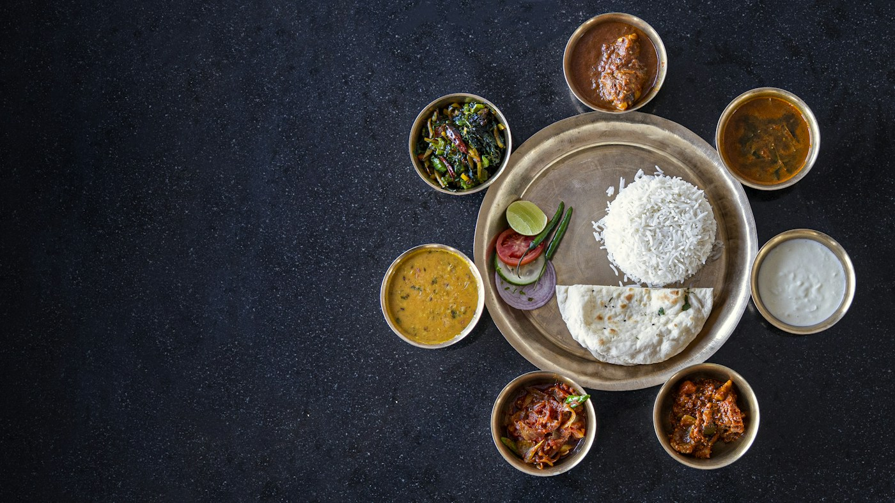
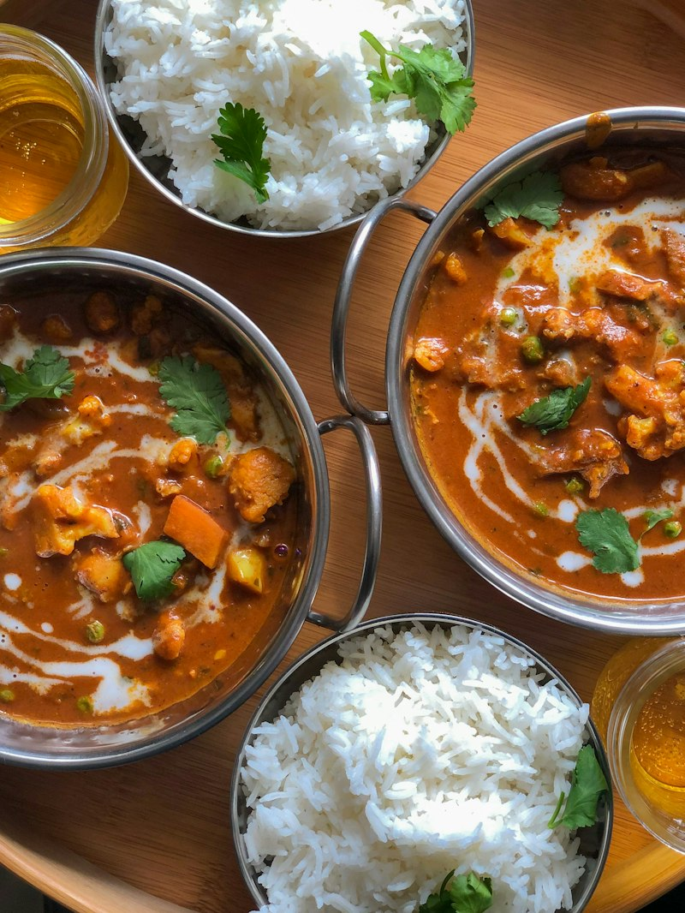

For Food Providers
Become a Donor
Have extra food from your restaurant, bakery, hostel, mess, or event? List it so people and organizations can request a pickup.
Connect surplus food with people who need it. Help restaurants, hostels, caterers, and local communities make every meal count.

Have extra food from your restaurant, bakery, hostel, mess, or event? List it so people and organizations can request a pickup.
Discover available surplus food and request a pickup from nearby donors.
Connecting surplus food with communities that need it through a transparent three-step cycle.
Donors provide food details, quantity, pickup schedule, and collection availability.
Receivers discover donations and request them based on geographic proximity and real-time alerts.
Donors and receivers coordinate collection using the existing workflow and verified QR handoffs.
Supporting diverse surplus varieties while upholding strict hygiene and fresh collection windows.
 Mandi & Market
Mandi & Market
Crisp seasonal produce, leafy greens, and farm-fresh harvests from local wholesale mandis and grocery outlets.

Community KitchensHot, hygienic vegetarian curries, subzis, and banquet portions prepared by caterers, canteens, and messes.
 Essential Nutrition
Essential Nutrition
Freshly steamed rice, protein-rich lentils, rotis, and grain staples packaged in food-grade containers.
 Daily Bakery
Daily Bakery
Artisanal breads, pav, buns, and fresh tea-time bakery items prepared daily by local bakeries and cafes.
In every neighborhood, good food goes uneaten while families and shelters struggle with food insecurity. NourishLoop bridges this gap through localized, real-time rescue logistics.
Select your contribution role to enter your dedicated management portal.